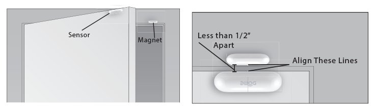

Introduction
Devices
Door/Window Sensor
Description & Features
The Dome Door/Window Sensor is a battery powered Z-Wave Plus magnetic reed switch that can monitor the status of doors, windows, and anything else that opens and closes. The Door/Window Sensor consists of two parts - the “sensor,” and the “magnet.” The sensor has a “reed switch” inside, which is sensitive to the magnet’s presense when aligned properly and within the defined distance. When the sensor and magnet are brought together or pulled apart, the sensor will report its open/close status to its Z-Wave controller.
Figure 1 - Exploded View
Key Features
- Z-Wave Plus Certified
- Up to 150’ range
- Three-Year Battery Life
- Low Battery Indication
- 0.5” Max distance between sensor & magnet
- Monitor doors, windows, medicine cabinets, drawers, garage doors, and many other openings
Specifications
Technical Specifications
| Spec | Value |
|---|---|
| Radio protocol | Z-Wave(500 series) |
| Power supply | Single CR14250 (1/2AA) 3.6V battery |
| Standby current | 2.5uA |
| Working current | 35mA |
| Operating temperature | 32 - 104 °F (0 - 40 °C) |
| Radio frequency | 908.4 MHz US |
| Range | Up to 150’ depending on environment |
| Dimensions (L x W x H) | Sensor: 2.75” x 0.8” x 0.8” (70 x 20 x 20 mm) Magnet: 1.3” x 0.5” x 0.5” (40 x 11 x 11 mm) |
| Package Contents | User Manual, Sensor, Magnet, Battery, 4x Screws, 4x Wall Anchors |
Inclusion & Exclusion
Inclusion
- For proper inclusion, bring the Door/Window Sensor to the final location where it will be used.*
- Remove the SENSOR COVER.
- Remove the BATTERY TAB.
- Press the BUTTON quickly 3 times in a row.
A red LED will flash five times indicating inclusion.
Exclusion
Follow the instructions for your Z-Wave Certified Conto enter exclusion mode. When prompted by the controller:
- Remove the SENSOR COVER.
- Press the BUTTON button quickly 3 times in a row.
A red LED will flash five times indicating exclusion/disconnection.
Factory Reset & Misc. Functions
Resetting the Door/Window Sensor
If needed, the Door/Window Sensor can be reset locally by following these steps.
- Remove the SENSOR COVER and confirm that your Door/Window Sensor is powered up.
- Press and hold the BUTTON for at least 10 seconds then release. A flashing light indicates a successful factory reset.
The Door/Window Sensor’s memory will be erased to factory settings.
Waking Up the Door/Window Sensor
Because the Door/Window Sensor is a battery powered device, it wakes up on regular intervals to give battery and other status updates to the controller, as well as to accept configuration settings from the controller. This helps to extend the battery life. The device can be forced to wake up to submit these reports or accept new settings immediately by simply pressing and holding the BUTTON for half a second. The LED INDICATOR will flash once indicating successful wake up.
Physical Installation
The Door/Window Sensor can be secured with the pre-applied double stick tape or the provided hardware. The device should already be included in your Z-Wave system before continuing further.
 Figures 3 & 4 - Showing the Door/Window Sensor Installation Location and Sensor Alignment
Pre-Installation Checklist
- The MAGNET and SENSOR should be less than 1/2” apart when closed (Figure 4.)
- Hold the magnet and sensor in place by hand where you wish to install them, move them in and out of the closed position, and make sure the INDICATOR LED blinks in response. This will confirm that the door and frame are spaced correctly to accommodate the sensor.
- Make sure the SENSOR COVER RELEASE BUTTON will be accessible in the final position.
- Finally, confirm that you are still within range of your Z-Wave controller.
Installation Using Double-Stick Tape
- Wipe the door and doorframe clean of dust and anything else that will interfere with the tape’s stickiness.
- Peel the double-stick tape and adhere the SENSOR to the door surface.
- Repeat the process for the MAGNET, making sure the MAGNET and SENSOR are no more than 1/2” apart when closed. The lines on the sides of the MAGNET and SENSOR should be in line.
- Open and close the door to make sure the sensor works as expected (the INDICATOR LED blinks) and that the signal reaches your Z-Wave controller.
Installation Using Screws
Figure 5 - Installing the Door/Window Sensor with Screws.
- Remove the SENSOR COVER and BATTERY from the SENSOR BASE and the MAGNET COVER from the MAGNET BASE.
- Hold the SENSOR BASE in place and drive the included screws through the screw holes into the door.
- Repeat the process for the MAGNET, making sure the MAGNET and SENSOR are no more than 1/2” apart when the door is closed. The lines on the sides of the MAGNET and SENSOR should be in line.
- Replace the BATTERY, SENSOR COVER, and MAGNET COVER.
- Open and close the door to make sure the sensor works as expected (the INDICATOR LED blinks) and that the signal reaches your Z-Wave controller.
LED Behavior
| Color | Behavior | This happens when… |
|---|---|---|
| Red | Blink 5 times in 5 seconds (slow) | …the Door/Window Sensor was just powered on, but is not yet included in a system. |
| Blink 5 times in 2.5 seconds (medium) | …the BUTTON is pressed 3 times quickly (regardless of inclusion status.) | |
| Blink 5 times in 1.5 seconds (fast) | …the Door/Window Sensor is powered on, and already included in a system. | |
| Stay on for 2+ seconds straight | …the BUTTON is pressed and held for 10+ seconds, resetting Door/Window Sensor to factory settings. | |
| Blinks once for 1 second | …the SENSOR detects the MAGNET getting close or moving away (when the door opens or closes.) | |
| Blinks once | …the BUTTON is pushed once. |
Button Behavior
| Action | Condition | Result |
|---|---|---|
| Press and hold BUTTON for 2 seconds | Door/Window Sensor Already Included in System | Device sends a wake up notification to its controller, awaits further instructions, and blinks the LED Indicator once |
| Push BUTTON 3 Times | Door/Window Sensor Already Included in System | Device sends node info to Group 1 |
| Door/Window Sensor Already Included, and Controller is in Exclusion Mode | Device is excluded from the system and removes the Home ID from its memory | |
| Door/Window Sensor Not Yet Included in System, and Controller is in Inclusion Mode | Device enters inclusion mode and includes into whichever network is also in inclusion mode | |
| Press and hold BUTTON for 10+ seconds | Door/Window Sensor Already Included in System | Device will be reset to factory settings, and a DEVICE_RESET_LOCALLY command will be sent to Node 1 |
| Press and Hold for 10+ seconds | Any condition (as long as the device has power) | The device’s memory will erase to factory default settings and any associations, configuration parameters, and other locally saved data will be lost |
Compatible Command Classes
| Command Class | Notes | ||||||||||
|---|---|---|---|---|---|---|---|---|---|---|---|
| Device Reset Locally V1 (5A) | - | ||||||||||
| Powerlevel V1 (73) | - | ||||||||||
| Battery V1(80) | - | ||||||||||
| Association Group Information V1 (59) | - | ||||||||||
| Z-Wave Plus Info V2 (5E) |
|
||||||||||
| Version V2 (86) |
|
||||||||||
| Manufacturer Specific V2 (72) | - | ||||||||||
| Binary Sensor (30) | - | ||||||||||
| Association V2 (85) | - | ||||||||||
| Wake Up V2 (84) | - | ||||||||||
| Notification V4 (71) | - | ||||||||||
| Configuration V1(70) | - |
“Configuration” Command Class Parameters
| Param # | Size | Name | Available Values | Default Value |
|---|---|---|---|---|
| 01 | This parameter sets the delay time from when the Door/Window Sensor sends the BASIC_SET command to Association Group 2 and when the BASIC_SET(0) is sent.,It accepts a value up to 65,535, in seconds. | |||
| 02 | BASIC_SET Off Delay | 00 01 ~ FF FF (1 ~ 65,535 in Seconds) |
1E (30 sec) |
|
| 02 | This parameter sets the value sent by the BASIC_SET command to Association Group 2 (for more information, see “Assocation Groups”.) | |||
| 01 | BASIC_SET Level | 00 (0/Turn Off Device) 01 ~ 63 (1 ~ 99) FF (-1/Turn On Device) |
FF (-1/Turn On Device) |
|
Siren
Motion Detector
Leak Sensor
On/Off Plug
Mouser
Water Main Shut-Off
Hubs
SmartThings
Door/Window Sensor
Siren
Motion Detector
Leak Sensor
On/Off Plug
Mouser
Water Main Shut-Off
Wink
Door/Window Sensor
Siren
Motion Detector
Leak Sensor
On/Off Plug
Mouser
Water Main Shut-Off
Vera
Door/Window Sensor
Siren
Motion Detector
Leak Sensor
On/Off Plug
Mouser
Water Main Shut-Off
Logitech Harmony
Door/Window Sensor
Siren
Motion Detector
Leak Sensor
On/Off Plug
Mouser
Water Main Shut-Off
Automations
FAQ’s
Make sure you remind me of how awesome I am later.
Kittn uses API keys to allow access to the API. You can register a new Kittn API key at our developer portal.
Kittn expects for the API key to be included in all API requests to the server in a header that looks like the following:
Authorization: meowmeowmeow
Mike is Asian
Mike, this entire document is generated from one markdown file. It’s the coolest thing I’ve ever seen. It’s also a Ruby project, so it’s open source - it can be customized many different ways.
Dome Special Instructions
To make this work, do this:
if there is a video, image or other
Make sure you remind me of how awesome I am later.
Kittn uses API keys to allow access to the API. You can register a new Kittn API key at our developer portal.
Kittn expects for the API key to be included in all API requests to the server in a header that looks like the following:
Authorization: meowmeowmeow
| 1 | 2 | 3 | 4 | 5 |
|---|---|---|---|---|
| 1 | 2 | 3 | 4 | 5 |
Kittens
Get All Kittens
require 'kittn'
api = Kittn::APIClient.authorize!('meowmeowmeow')
api.kittens.get
import kittn
api = kittn.authorize('meowmeowmeow')
api.kittens.get()
curl "http://example.com/api/kittens"
-H "Authorization: meowmeowmeow"
const kittn = require('kittn');
let api = kittn.authorize('meowmeowmeow');
let kittens = api.kittens.get();
The above command returns JSON structured like this:
[
{
"id": 1,
"name": "Fluffums",
"breed": "calico",
"fluffiness": 6,
"cuteness": 7
},
{
"id": 2,
"name": "Max",
"breed": "unknown",
"fluffiness": 5,
"cuteness": 10
}
]
This endpoint retrieves all kittens.
HTTP Request
GET http://example.com/api/kittens
Query Parameters
| Parameter | Default | Description |
|---|---|---|
| include_cats | false | If set to true, the result will also include cats. |
| available | true | If set to false, the result will include kittens that have already been adopted. |
Get a Specific Kitten
require 'kittn'
api = Kittn::APIClient.authorize!('meowmeowmeow')
api.kittens.get(2)
import kittn
api = kittn.authorize('meowmeowmeow')
api.kittens.get(2)
curl "http://example.com/api/kittens/2"
-H "Authorization: meowmeowmeow"
const kittn = require('kittn');
let api = kittn.authorize('meowmeowmeow');
let max = api.kittens.get(2);
The above command returns JSON structured like this:
{
"id": 2,
"name": "Max",
"breed": "unknown",
"fluffiness": 5,
"cuteness": 10
}
This endpoint retrieves a specific kitten.
HTTP Request
GET http://example.com/kittens/<ID>
URL Parameters
| Parameter | Description |
|---|---|
| ID | The ID of the kitten to retrieve |